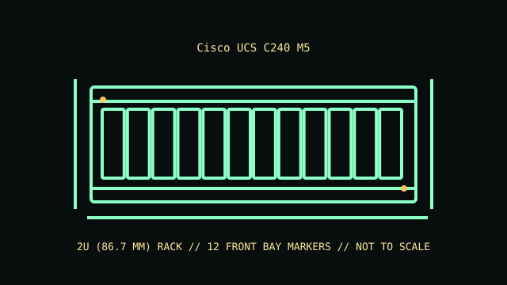

[ MODEL IDENTIFICATION // UCS C240 M5 // 2U RACK SERVER ]
Cisco UCS C240 M5
2U (86.7 mm); 86.7 × 447 × 757 mm (H × W × D, including handles in Cisco specifications); rail kit and cable-management arm affect rack depth.

REVISION CAVEAT: Front drive layouts and rear bays vary by Cisco model suffix. Confirm the full UCSC product identifier and installed backplane before replacing drives or PCIe equipment.
Specifications & fit
| Catalog subcategory | Rack server enclosures |
|---|---|
| Model / board and backplane | Cisco UCS C240 M5 dual-socket system board with Cisco-specific front drive backplane and optional rear SFF backplane. Model suffix and backplane determine SAS/SATA/NVMe drive support. |
| Rack height / dimensions / rails | 2U (86.7 mm); 86.7 × 447 × 757 mm (H × W × D, including handles in Cisco specifications); rail kit and cable-management arm affect rack depth. Cisco tool-less rail kit and optional reversible cable-management arm; use C240 M5-compatible hardware and confirm cabinet depth, post type and full extension clearance. |
| Power supply | Redundant hot-swappable AC/DC supply variants, including 770 W, 1050 W and 1600 W AC classes; confirm UCS-approved supply, input voltage and GPU/storage load. |
| Drive bays | Front chassis variants include 24 SFF, 8 SFF or 12 LFF hot-plug bays; optional rear 2 SFF bays are supported in selected builds. SAS/SATA/NVMe is model/backplane-specific. |
| Expansion / risers | Up to six PCIe Gen3 slots, dependent on riser configuration; system also provides Cisco-specific modular LAN expansion. Slot width/height and card support are riser- and configuration-dependent. |
| Cooling | Hot-swappable redundant fan modules (up to eight depending on configuration) provide front-to-rear airflow; retain the matching fan population, baffles and drive blanks. |
| Compatibility | C240 M5-specific board, risers, backplane, UCS VIC/mLOM, drive carriers and power supplies. M5 is a distinct generation; do not assume C220 M5 or C240 M6 parts fit. |
| Revision identification | Front drive layouts and rear bays vary by Cisco model suffix. Confirm the full UCSC product identifier and installed backplane before replacing drives or PCIe equipment. |
Compatibility & preservation notes
C240 M5-specific board, risers, backplane, UCS VIC/mLOM, drive carriers and power supplies. M5 is a distinct generation; do not assume C220 M5 or C240 M6 parts fit.
Cisco tool-less rail kit and optional reversible cable-management arm; use C240 M5-compatible hardware and confirm cabinet depth, post type and full extension clearance. Always use the correct lifting procedure for the complete installed unit and disconnect power before service.
- Record the full model/product number, serial label, board and backplane identifiers, installed risers, PSU labels and rail-kit part number before disassembly.
- For rack servers, verify exact generation, bay/backplane, controller, riser, fan and PSU compatibility; equal rack height does not establish parts compatibility.
- Keep drive carriers, blanks, shrouds, brackets and fasteners labeled with their original chassis and position. Measure the complete chassis, rails and cable arm before rack installation.
Manufacturer manuals & product specifications
- Cisco UCS C240 M5 Rack Server Spec SheetManufacturer documentation for this exact model family; verify the machine/product number and document revision.
- Cisco UCS C240 M5 installation and service guidesManufacturer documentation for this exact model family; verify the machine/product number and document revision.
Published dimensions and option maxima vary by build. Check the specific product number and measure the specimen before restoration, shipping or installation.